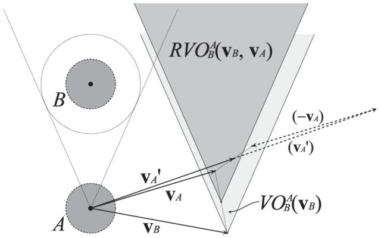
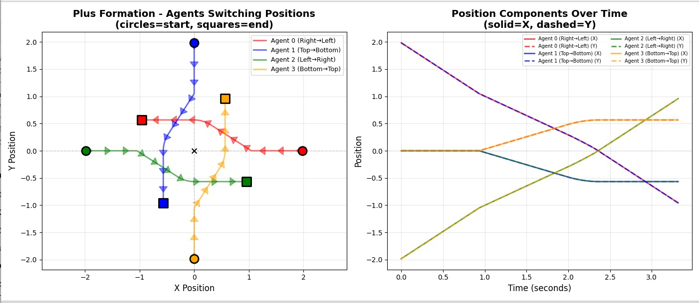

Computational Robotics Final Group Project
Neatofleet
I built a ROS 2 multi-robot coordination system that uses RVO2 to route three Neatos around each other.
Overview
The project implements centralized ROS 2 fleet control using Python bindings to RVO2. It coordinated three differential-drive Neatos to reach individual goals while avoiding each other and static obstacles. After observing sim-to-real failures caused by noisy wheel odometry and network latency, the system was adapted to record simulation trajectories and replay them deterministically on the robots.
Technical highlights
- Centralized ROS 2 fleet controller aggregating
/robot{i}/odomand publishing synchronized/robot{i}/cmd_velnamespaces. - RVO2 velocity-space collision avoidance selecting safe velocities from preferred goal velocities, neighbor states, and static obstacles with configurable time horizons.
- Gazebo-to-hardware pipeline: record collision-free trajectories in simulation, timestamp to CSV, then replay on Neatos with synchronized start conditions.
- Differential-drive conversion: converted RVO2 (vx, vy) outputs to
Twist(linear.x, angular.z) via a heading-error controller. - Diagnosis and sim-to-real engineering: identified encoder drift, wheel slip, and Wi-Fi latency as failure modes and switched to short open-loop trajectory playback for hardware validation.
Why RVO2
We selected Reciprocal Velocity Obstacles (RVO2) because it gives each robot a local rule for choosing a safe velocity around nearby moving agents. Our implementation used Python-RVO2, a Python binding of the standard RVO2 library, based on the paper "Reciprocal Velocity Obstacles for Real-Time Multi-Agent Navigation" by van den Berg et al.


If neighboring agents choose velocities outside each other's reciprocal velocity obstacle, their short-term motion is collision-free.
Choosing the nearest safe velocity tends to make both agents pick the same passing side, which keeps the interaction coordinated.
The updated preferred velocity remains inside the new obstacle region, reducing the flip-flop behavior that can happen with purely reactive avoidance.
System Architecture
The final architecture became a two-phase pipeline. We trusted Gazebo for clean state and trajectory generation, then replayed the captured commands on hardware rather than closing the loop on noisy onboard odometry.
Simulation and Capture
Gazebo provided ground truth. The RVO controller ran in a clean physics environment and produced an ideal command trajectory.
Open-Loop Playback
The command player read the CSV and streamed velocity commands to the physical robots, bypassing the unreliable onboard state estimate.
Results
- Successfully coordinated three Neatos in simulation using RVO2 for multi-robot swaps and obstacle avoidance.
- Transferred trajectories to physical robots with timestamped playback; reliable for short maneuvers of about 30 seconds before wheel slip accumulated.
- Simulation validated the planner, but wheel slip and network latency prevented reliable closed-loop control on the Neatos. We switched to short timestamped playback and got reliable maneuvers for about 30 seconds.
Limitations and critique
Rather than forcing an unreliable closed-loop system, the design changed: run RVO2 in simulation, record deterministic trajectories, and replay them on the physical robots with synchronized starts. This tradeoff validated the algorithmic behavior on hardware while acknowledging the platform's limits.
Encoder drift, wheel slip, and Wi-Fi latency broke the relative-state assumptions RVO2 relies on, so we recorded simulation trajectories and replayed them on hardware.
RVO2 assumes holonomic motion; converting its (vx, vy) outputs to differential-drive Twist introduced tracking error and limited closed-loop performance.
Without low-latency global localization or onboard processing for dynamic obstacles, closing the loop in real time was unreliable—an overhead tracking system or moving computation onboard would help.
Source code and website
Full technical details, equations, and launch configs are on the project site, and the implementation is on GitHub. The portfolio page keeps the narrative short; click through for the full report.